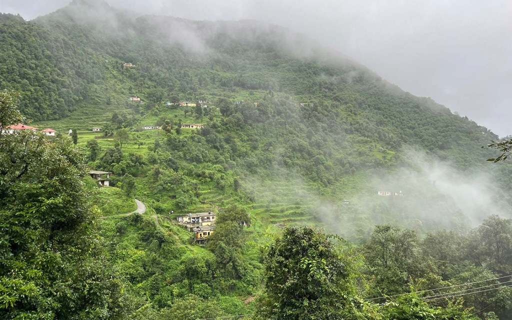
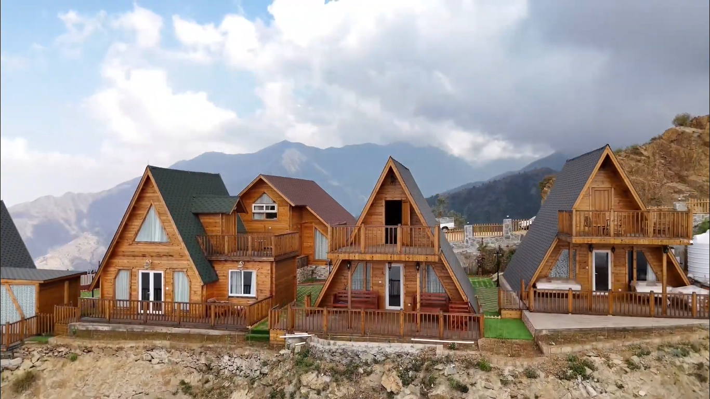

جبال فيفاء

جبال خضراء تشتهر بمدرجاتها الزراعية وبيوتها الجبلية التقليدية وإطلالاتها الواسعة. وتمنح الزائر فرصة لاكتشاف الطبيعة الجبلية وتذوق منتجات محلية مثل العسل والسمن والبن في أجواء مختلفة عن ساحل جازان.
اكواخ لي لونا

كوخ جبلي وسط طبيعة محافظة الريث، يتميز بإطلالاته على الجبال والضباب وأجوائه الهادئة. تجربة مناسبة لمن يرغب في الابتعاد عن صخب المدينة والاستمتاع بإقامة وسط الطبيعة.
مزرعة قنيف للبن

تجربة تأخذ الزائر إلى قلب مزارع البن الخولاني في جبال الداير بني مالك، حيث يمكن التعرف على زراعة البن ومراحل إنتاجه والاستمتاع بالجلسات وسط المدرجات الزراعية. فرصة لاكتشاف جانب من ثقافة القهوة السعودية من مصدرها.
شلال الدوحين في هروب

شلال تحيط به الجبال والنباتات الطبيعية، وتتشكل حوله أجواء هادئة لمحبي الطبيعة والمشي والاستكشاف. ويمنح المكان تجربة مختلفة بعيدًا عن الوجهات السياحية التقليدية.
وادي لجب

وادي صخري ضيق وعميق تحيط به الجدران الشاهقة والنباتات، وتتخلله المياه والشلالات في بعض أجزائه. وجهة لمحبي المغامرة واستكشاف التكوينات الجيولوجية والطبيعة الجبلية الفريدة.